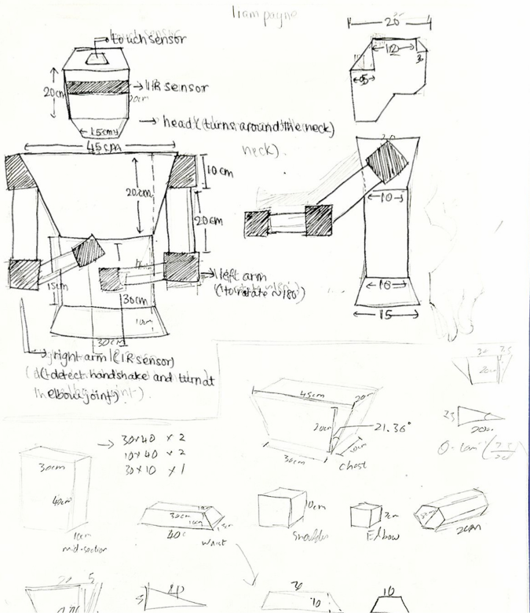
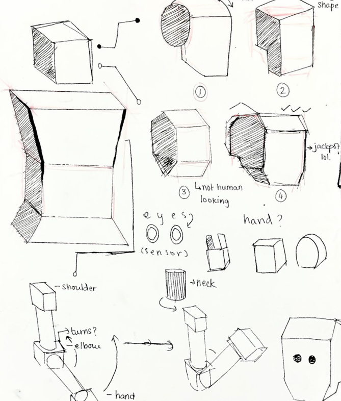
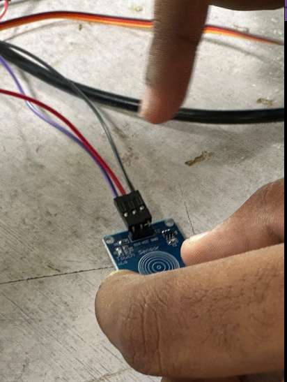
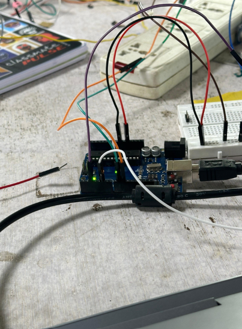
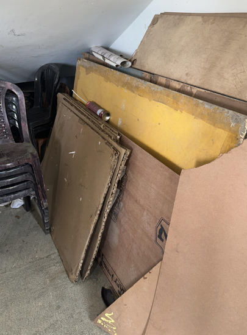
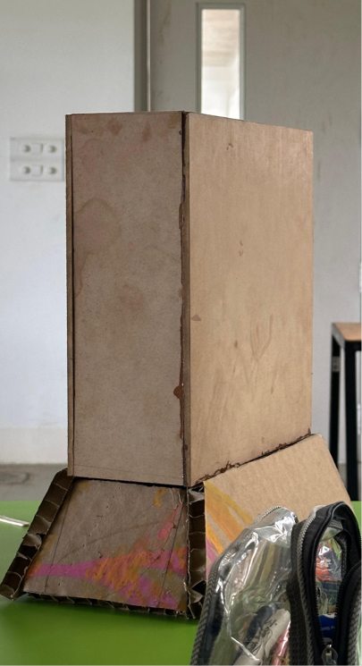
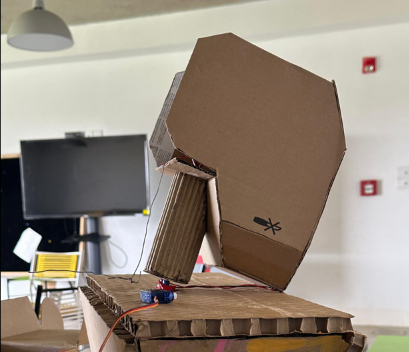
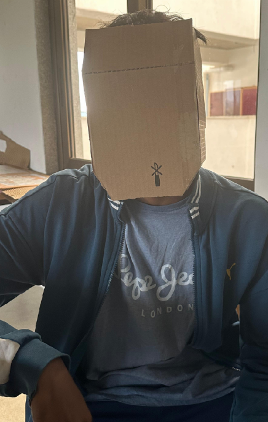

laser printer
a belt mechanism moves a laser across paper to burn patterns into it.
 kshiraja
kshiraja
kshiraja
kshiraja
2006 · @ blr, india.
kinetic art · physical computing
a robot that turns away when something gets too close.

context
the project was part of a unit on kinetic art. we looked at how artists use movement in their work, then explored how physical making, electronics and code could come together in a small robot.
we wanted to make something that felt like it had a character of its own. rather than relying on a screen, voice or complicated expressions, the robot would communicate through the way it moved and responded to people.
that became the starting point for byebot: a robot that does not want to be approached.
choosing an idea
the initial ideas involved very different kinds of movement and interaction. we chose the rejection robot because its premise was simple, but gave us room to develop a personality through its behaviour.
a belt mechanism moves a laser across paper to burn patterns into it.
a programmed device makes muscles move through electrical stimulation.
a robotic arm uses pressure to pick things up and drop them.
we eventually settled on the rejection robot. we were more interested in making a machine that reacted to someone than in building a mechanism that simply performed a task. it also meant that movement could carry most of the character.


the idea
we wanted the robot to feel like it actively disliked being approached. each interaction would bring it closer to giving up completely.
when something comes close, byebot turns away. this repeats every time it detects someone nearby. the limit of 18 turns was a deliberate part of the character: it mimics the robot getting frustrated with repeated attempts to interact with it, until it finally shuts down.
we wanted its personality to come through in what it did, rather than having to explain it through dialogue or expressions.
the ultrasonic sensor measures how close an object is to the robot.
when something comes within 20 cm, the robot turns 45 degrees away.
after 18 turns, the system switches off and the LEDs blink in a shutdown sequence.
how it works
the robot uses distance sensing to trigger a servo motor. the same interaction is counted until it reaches the shutdown limit.
an ultrasonic sensor placed in the head measures the distance between the robot and nearby objects.
when the threshold is crossed, the servo turns the robot 45 degrees, either clockwise or anticlockwise.


building it
we worked on the code and physical construction together, figuring out how the two parts would work with each other.
the body was made entirely from recycled cardboard we collected around campus. we used different kinds for different parts of the structure, depending on how much weight and flexibility each part needed.
we also had to think about where the sensor and servo would sit, and how the movement would translate into the physical body turning.


decisions and compromises
the character was developed through a set of possible responses, but we had to choose which ones we could actually build and test.
| considered behaviour | in the final build |
|---|---|
| look away | built — the robot turns away when something gets close. |
| pull away from a handshake | not built — left out of the final mechanism. |
| make a sound | not built — left out of the final behaviour. |
| switch off after repeated interaction | built — after 18 turns, the robot shuts down. |
working with the time and materials available meant making decisions about what was possible to build and test. we left out some responses so we could get the main behaviour working.
what went wrong
the cardboard head kept shifting on its neck and servo mount, and our adjustments never made it stable.
we ran out of time before we could redesign the joint and give the head a dependable support. it remained a visible flaw in the final build.
we also underestimated how much the physical structure and mechanism affected each other. testing the head support and servo movement together earlier might have given us time to find a better solution.


byebot didn't need a face or a voice to communicate that it was getting frustrated. its repeated attempts to turn away, followed by its eventual shutdown, were enough to establish a character. that was the part of the project we were most interested in exploring.
it also made us realise how different it is to make something work physically compared to making it work in code. testing as we went along would have helped us catch problems earlier, especially when the physical structure and the programmed behaviour depended on each other.
thank you to my teammate for working with me on the concept, code, electronics, and physical build.